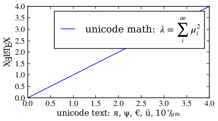
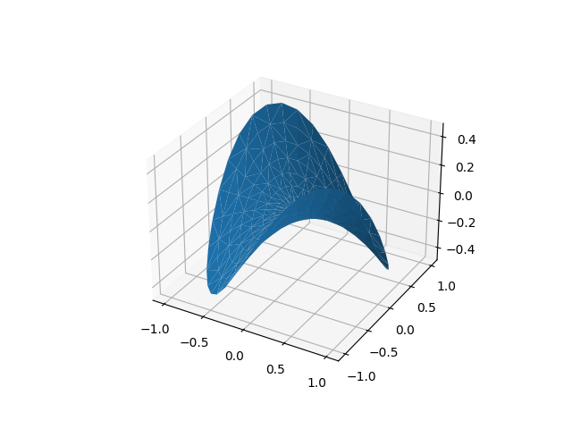
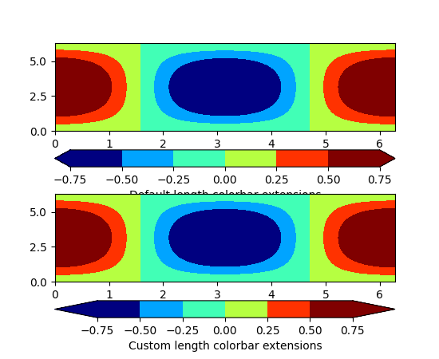
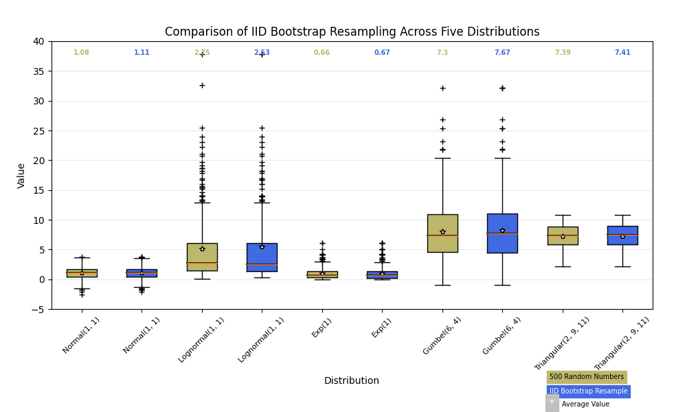
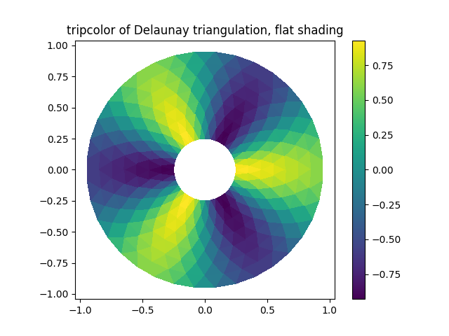
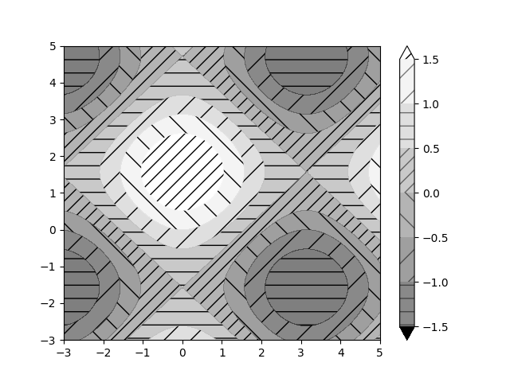

New in matplotlib 1.2¶
Table of Contents
Note
matplotlib 1.2 supports Python 2.6, 2.7, and 3.1
Python 3.x support¶
Matplotlib 1.2 is the first version to support Python 3.x, specifically Python 3.1 and 3.2. To make this happen in a reasonable way, we also had to drop support for Python versions earlier than 2.6.
This work was done by Michael Droettboom, the Cape Town Python Users' Group, many others and supported financially in part by the SAGE project.
The following GUI backends work under Python 3.x: Gtk3Cairo, Qt4Agg, TkAgg and MacOSX. The other GUI backends do not yet have adequate bindings for Python 3.x, but continue to work on Python 2.6 and 2.7, particularly the Qt and QtAgg backends (which have been deprecated). The non-GUI backends, such as PDF, PS and SVG, work on both Python 2.x and 3.x.
Features that depend on the Python Imaging Library, such as JPEG handling, do not work, since the version of PIL for Python 3.x is not sufficiently mature.
PGF/TikZ backend¶
Peter Würtz wrote a backend that allows matplotlib to export figures as drawing commands for LaTeX. These can be processed by PdfLaTeX, XeLaTeX or LuaLaTeX using the PGF/TikZ package. Usage examples and documentation are found in Typesetting with XeLaTeX/LuaLaTeX.

Locator interface¶
Philip Elson exposed the intelligence behind the tick Locator classes with a simple interface. For instance, to get no more than 5 sensible steps which span the values 10 and 19.5:
>>> import matplotlib.ticker as mticker
>>> locator = mticker.MaxNLocator(nbins=5)
>>> print(locator.tick_values(10, 19.5))
[ 10. 12. 14. 16. 18. 20.]
Tri-Surface Plots¶
Damon McDougall added a new plotting method for the
mplot3d toolkit called
plot_trisurf().

Trisurf3d¶
Control the lengths of colorbar extensions¶
Andrew Dawson added a new keyword argument extendfrac to
colorbar() to control the length of
minimum and maximum colorbar extensions.
(Source code, png, pdf)
{kind=link}

Figures are picklable¶
Philip Elson added an experimental feature to make figures picklable for quick and easy short-term storage of plots. Pickle files are not designed for long term storage, are unsupported when restoring a pickle saved in another matplotlib version and are insecure when restoring a pickle from an untrusted source. Having said this, they are useful for short term storage for later modification inside matplotlib.
Set default bounding box in matplotlibrc¶
Two new defaults are available in the matplotlibrc configuration file:
savefig.bbox, which can be set to 'standard' or 'tight', and
savefig.pad_inches, which controls the bounding box padding.
New Boxplot Functionality¶
Users can now incorporate their own methods for computing the median and its
confidence intervals into the boxplot method. For
every column of data passed to boxplot, the user can specify an accompanying
median and confidence interval.

Boxplot Demo3¶
New RC parameter functionality¶
Matthew Emmett added a function and a context manager to help manage RC
parameters: rc_file() and rc_context.
To load RC parameters from a file:
>>> mpl.rc_file('mpl.rc')
To temporarily use RC parameters:
>>> with mpl.rc_context(fname='mpl.rc', rc={'text.usetex': True}):
>>> ...
Streamplot¶
Tom Flannaghan and Tony Yu have added a new
streamplot() function to plot the streamlines of
a vector field. This has been a long-requested feature and complements the
existing quiver() function for plotting vector fields.
In addition to simply plotting the streamlines of the vector field,
streamplot() allows users to map the colors and/or
line widths of the streamlines to a separate parameter, such as the speed or
local intensity of the vector field.

Plot Streamplot¶
New hist functionality¶
Nic Eggert added a new stacked kwarg to hist() that
allows creation of stacked histograms using any of the histogram types.
Previously, this functionality was only available by using the "barstacked"
histogram type. Now, when stacked=True is passed to the function, any of the
histogram types can be stacked. The "barstacked" histogram type retains its
previous functionality for backwards compatibility.
Updated shipped dependencies¶
The following dependencies that ship with matplotlib and are optionally installed alongside it have been updated:
Face-centred colors in tripcolor plots¶
Ian Thomas extended tripcolor() to allow one color
value to be specified for each triangular face rather than for each point in
a triangulation.

Tripcolor Demo¶
Hatching patterns in filled contour plots, with legends¶
Phil Elson added support for hatching to
contourf(), together with the ability
to use a legend to identify contoured ranges.

Contourf Hatching¶
Known issues in the matplotlib 1.2 release¶
When using the Qt4Agg backend with IPython 0.11 or later, the save dialog will not display. This should be fixed in a future version of IPython.